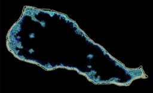

French Polynesia Tuamotu Archipelago FS9/FSX Addon Scenery
Group B
Niau
6 years ago, Dr. Angela Kay Kepler taught me many things about Niau. I wanted to correct the explanation of Niau immediately, but various things came together and I was unable to do so. Recently, I was able to get in touch with Dr. Angela (she was still doing well and continuing her research.). So I decided to revise Niau's explanation, following advice from her.
Dr. Angela, Thanks very much for your precise advice.

So far the description of Niau is as follows:
Niau is located at 60 km west of Fakarava. The atoll of Niau forms a complete ring and has a completely enclosed lagoon. The water color of the lagoon is green a little and it is said the water quality is hypersaline. The lagoon might be connected with the open sea underground. Otherwise, it seems that the lagoon dries up. Niau has a strange lagoon.
So far the description of Niau is as follows:
Niau is located at 60 km west of Fakarava. The atoll of Niau forms a complete ring and has a completely enclosed lagoon. The water color of the lagoon is green a little and it is said the water quality is hypersaline. The lagoon might be connected with the open sea underground. Otherwise, it seems that the lagoon dries up. Niau has a strange lagoon.
Size of Niau relative to Rangiroa

Size of Niau relative to Rangiroa
When I designed the scenery for Niau, I thoughted the following things about Niau.
- The lagoon is connected to the open sea underground, so it has a high salinity.
- Then why is the lagoon green in color?
I asked Dr. Angela about my questions.
Case 1 - Dr. Angela replied as follow:
Lagoon water is brackish.
This means it is less salty than sea water.
Some fresh water is diluting the salt water.
This type of "lake" happens when you have an atoll that fills in with coral all around so there is has no connection to the ocean.
When there is no rain, the interior "lake" gets hypersaline, i.e. very salty.
However, I think Niau receives good rainfall,
which adds fresh water to the central lagoon making it brackish.
Eventually - in many thousands of years, this "lake" will be all fresh water and then it will disappear altogether.
There is no need to think that there is an underground connection to the sea
because what we have here at Niau is unusual but a normal process of evolution,
whereby the atoll is filling in to become an island with no lagoon.
If there was a connection to the sea,
the lagoon would be subject to tidal flow and
it would probably not be brackish - it would be salty like the ocean.

A case where the lagoon is connected to the open sea underground.

A case where the lagoon maintains its water level with moderate rainfall.
Case 2 - Dr. Angela replied as follow:
We have talked about this before.
The phosphate comes from large numbers of seabirds
- that are roosting and nesting in the trees - excreting (pooping!) lots and lots of guano,
which is full of nitrogen.
It's a similar situation to Mataiva and Tehuata.
Tons of guano seep into the lagoon and much of it stays under the trees too, to enrich the soil.
Phosphate is good for plants but not for coral growth.
The reason the lagoon is green is because
it is high in nitrogen (from the seabird guano)
and this encourages lots of green algae.
In addition, Dr.Angela provided valuable information.
1. Fresh water is plentiful.
This means that Niau receives plenty of rain and over the years
this rain has developed lots of underground water reserves.
This rain has made the lagoon brackish, whereas - as I said above - if there was only a little rain,
the lagoon would be hypersaline (very salty).
On the island's edge, up to one mile inland (1.6 km), there is a narrow belt of swampy land.
This means that fresh water from rain runs down the small cliffs and does not enter the sea
but becomes wet and muddy along the coast.
This is similar to Mauke and Mitiaro in the Cook Islands, not far away.
They are also upraised fossil coral islands.

Niau Topography
Because of the rich soil from the seabird guano, coconut palms thrive here
and the island produced good harvests of copra (dried coconut for coconut oil and suntan lotions)
and even grew breadfruit, oranges and other plants<> that
normally don't grow in the Tuamotus beause they are too dry.
Niau is important biologically because it is one of the few islands
where Tuamotuan native plants still survive in a few pockets that were not planted in coconut palms.
1. Fresh water is plentiful.
This means that Niau receives plenty of rain and over the years
this rain has developed lots of underground water reserves.
This rain has made the lagoon brackish, whereas - as I said above - if there was only a little rain,
the lagoon would be hypersaline (very salty).
On the island's edge, up to one mile inland (1.6 km), there is a narrow belt of swampy land.
This means that fresh water from rain runs down the small cliffs and does not enter the sea
but becomes wet and muddy along the coast.
This is similar to Mauke and Mitiaro in the Cook Islands, not far away.
They are also upraised fossil coral islands.
Niau Topography
Because of the rich soil from the seabird guano, coconut palms thrive here
and the island produced good harvests of copra (dried coconut for coconut oil and suntan lotions)
and even grew breadfruit, oranges and other plants<> that
normally don't grow in the Tuamotus beause they are too dry.
Niau is important biologically because it is one of the few islands
where Tuamotuan native plants still survive in a few pockets that were not planted in coconut palms.
2. The presence of kingfishers, endemic to Niau.
There is also an endangered bird there,
living in the rare native forest ecosystem.
It is called the Niau Kingfisher (previously Tuamotu Kingfisher).
I am an ornithologist but I've never seen this tiny kingfisher.
It is very colorful, with blue, reddish, and lots of white feathers!
3. The presence of salmon-like fish in the lake.
And lastly, my information says that "in the lagoon are excellent fish, resembling salmon".
I don't know what these fish are.
In the seas around, there would be rainbow runner fish, which have pinkish flesh like salmon,
but I have never heard of them living in inland "lakes" of brackish water.
Maybe someone introduced a fish to Niau's lagoon that is not native?
I couldn't find a site that introduced salmon-like fish that live in Niau's lake.
The new description about Niau atoll.
Niau is located 60 km west of Fakarava.
Niau Atoll forms a complete ring and has a fully enclosed lagoon.
Originally , This lagoon was probably connected to the open sea.
However, due to the upheaval of the surrounding coral reefs,
there is currently no connection to the open sea, either above ground or underground.
The lagoon does not dry up and maintains its water level because the atoll receives moderate rainfall.
So far I have used the term lagoon, but I think it would be more natural to describe it as a lake.
With moderate rainfall, the island has accumulated groundwater and the lake has gradually turned brackish.
The phosphate and nitrogen provided by seabird guano and rainfall enrich the island's soil.
Niau also grows breadfruit and oranges.
They cannot grow on other atolls in Tuamotu.
The abundance of water and vegetation has made the island home to the Niau Kingfisher,
a species endemic to this island.
There is also information that fish resembling salmon live in the brackish water lagoon.
Niau is important biologically.
The water color of the lagoon is slightly greenish.
This is because the high concentration of nitrogen from guano produces lots of green algae.
Niau is a strange island (with great hope!).
A strange atoll (with great hope!)

A strange atoll (with great hope!)